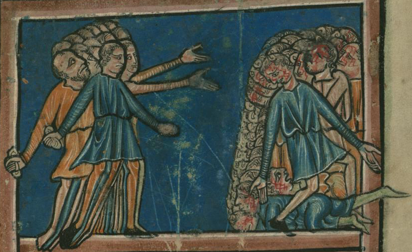

Joshua 7 — The Mister Translation

A leaf from a set of Bible pictures by an Oxford illuminator, scenes with no text but a caption. De Brailes reads the Masoretic them: the right-hand group is a household, not a man — several heads, one already down — and the stones are on all of them, which is the reading the Greek and Latin Bibles do not have and the Talmud argues away (v25). The Walters’ own caption says the Israelites stoned them, Achan and his family. There is no valley, no heap yet, no Joshua distinguished from the crowd; the throwers’ raised hands are the whole verb, all Israel. The medium is ink and pigment on parchment, the page about the size of a hand; the museum released the image into the public domain.
{kind=link}
★★★ The chapter opens by blaming a nation and naming a man. Vayim’alu venei-Yisrael ma’al ba-cherem: the sons of Israel — all of them — trespassed a trespass in the devoted things, and only then does the verse narrow to one thief, and it ends on the nation again, the anger of Jehovah burned against the sons of Israel. The verb and its noun, ma’al, are the trespass-offering’s own words: Leviticus 5:15 (already on these pages) opens the law of the guilt-offering with if a soul commits a trespass, and sins through error against the holy things of Jehovah, and 5:21 uses the same doubled phrase of a man who deals falsely with his fellow concerning a deposit — the two betrayals, of God’s holy things and of a neighbour’s trust, that this chapter will roll into one at v11. Ma’al ba-cherem, ‘a trespass in the devoted things,’ stands in three verses of the Hebrew Bible, and all three are about this man: this verse; Joshua 22:20, where the Transjordan tribes are reminded that Achan son of Zerah trespassed a trespass in the devoted things, and wrath fell on all the congregation of Israel, and he, one man, did not perish alone in his iniquity; and 1 Chronicles 2:7 (neither yet on these pages), which calls him Achar, the troubler of Israel, who trespassed in the devoted things. That last verse has changed his name. The Masoretic text of Joshua spells him Akhan, with a final nun; Chronicles spells him Akhar, with a final resh, and so does the Greek Bible throughout this chapter (Achar), and so does Josephus (Achar), and the pun Joshua makes at v25 — akhar, to trouble, and the Valley of Akhor — works on the resh and not on the nun. Whether the man was called Trouble from birth, or renamed for what he did, or whether one letter drifted in one book, is not decidable from the text; this translation prints what the Masoretic Joshua prints and records the other spelling here. Read out of the verses whose consonants also spell a Gadite’s name at 1 Chronicles 5:13, Achan is named in six verses of the Hebrew Bible — five in this chapter and Joshua 22:20 — and his ancestry is given twice in full, here and at v18: son of Carmi, son of Zabdi, son of Zerah, of the tribe of Judah. Four generations is a long pedigree for a thief; Calvin reads it as ‘increasing, and, as it were, propagating the ignominy … the writer of the history goes up as far as the tribe of Judah,’ the tribe that was ‘the flower and glory of the whole nation.’ Zerah is Tamar’s son, the twin who put out a hand and had a scarlet thread tied on it (Genesis 38:28–30, already on these pages) — the thread the Joshua 2 page set beside Rahab’s scarlet cord — and the clan-name mishpachat ha-Zarchi, ‘the clan of the Zerahites,’ stands in three verses of the Hebrew Bible: Numbers 26:20, in the census of the generation that would enter the land, and v17 below (the third, Numbers 26:13, is a different Zerah, Simeon’s). Carmi is also the name of a son of Reuben (Genesis 46:9, already on these pages), and the NIV prints ‘the son of Zimri’ for Zabdi, following Chronicles (1 Chronicles 2:6 lists Judah’s Zerah’s sons as Zimri, and Ethan, and Heman, and Calcol, and Dara) against the Hebrew of Joshua and the Greek Bible’s Zambri; that Zimri is a decision that the two names are one man with a letter changed, which may be right and is not what this verse says. The KJV reads ‘committed a trespass in the accursed thing’, the ASV ‘committed a trespass in the devoted thing’, the NWT 1984 ‘an act of unfaithfulness respecting the thing devoted to destruction’, the NIV ‘were unfaithful in regard to the devoted things’, the Geneva 1599 ‘the excommunicate thing’, the Douay-Rheims ‘took to their own use of the anathema’, and the Living Bible has him ‘took some loot for himself’. In Spanish the RV60 reads «cometieron una prevaricación en cuanto al anatema», the TNM 1987 «un acto de infidelidad respecto a la cosa dada por entero a la destrucción», the TNM 2019 «no fueron fieles con lo que se había reservado para la destrucción», and the NVI rewrites the pedigree as relationships, «nieto de Zabdí y bisnieto de Zera». This translation prints broke faith for the doubled verb, the plain English for a trust betrayed, and keeps the four generations as four sons of.
★★ The Greek Bible’s word for what Achan did is the word for what Ananias did. Where the Hebrew has ma’al, the Septuagint reads eplēmmelēsan … plēmmeleian megalēn kai enosphisanto apo tou anathematos, ‘committed a great trespass and purloined from the devoted thing’ (fetched); the verb nosphizomai, to keep back for oneself, to embezzle, is the verb of Acts 5:2–3 (not yet on these pages), where Ananias kept back some of the price of a field the whole of which he had claimed to give, and died in front of Peter; the Greek New Testament uses it in one other place, of slaves not pilfering (Titus 2:10, not yet on these pages). The two stories were read together long before the verb was noticed: in each a community just founded, at the moment of its first great success, is broken into by one household’s secret keeping-back of what had been declared God’s, and the punishment falls at once and in public. This page notes the verbal link and does not build on it: the Hebrew of this verse has no such verb, and Luke may have chosen his from the Greek Joshua or from ordinary usage. The Masoretic text sets a closed break {ס} after this verse — the theft is told, sealed, and then the story goes on as if no one knew it, which is the truth of it: no one did.
★★★ The first battle Israel loses in the land is fought on the ground where Abram first called on the name of Jehovah in it. Genesis 12:8 (already on these pages): Abram moved on to the hill country east of Bethel and pitched his tent — Bethel to the west, Ai to the east. There he built an altar to Jehovah and called on the name of Jehovah; and 13:3 brings him back to the same spot, between Bethel and Ai. Joshua’s spies are sent to Ai, which is beside Beth-aven, east of Bethel — the same two names, the same compass-point. The name is ha-Ai, with the definite article, in every one of its occurrences in this book as in Genesis, and the noun it is built on means a heap of ruins (Jeremiah 26:18, already on these pages, Jerusalem will become heaps of rubble; Micah 1:6, of Samaria, not yet): the city is called the Ruin before Joshua makes it one at 8:28, a tel for ever, a desolation, until this day. Beth-aven, ‘house of nothing’ or ‘house of iniquity,’ is a real place here and at Joshua 18:12, 1 Samuel 13:5 and 14:23, and a sneer at Bethel in Hosea (4:15; 5:8; 10:5), the house of God renamed for the calf that stood in it; the name stands in seven verses of the Hebrew Bible. Rashi glosses it as simply lying near Beth-aven, and the Living Bible drops the name altogether, sending the spies to ‘the city of Ai, east of Bethel’. The verb is ragal, to go about on foot, the spies’ verb of Joshua 2:1 and of 6:22–25 (both already on these pages); the form vayeraggelu, ‘and they spied out,’ stands in two verses of the Hebrew Bible, this one and Deuteronomy 1:24, where the twelve spied out the valley of Eshcol — the mission whose report broke a generation. The KJV reads ‘Go up and view the country’, the NIV ‘spy out the region’, the Douay-Rheims keeps the Vulgate’s spelling, ‘Hai’.
★★ ‘For they are few’ — the spies’ report is confident, and the text never says it was wrong. Al-teyagga-shammah et-kol-ha-am, ‘do not weary all the people out there’. The negated form al-teyagga stands in two verses of the Hebrew Bible, this one and Proverbs 23:4 (not yet on these pages), where it is wearing yourself out to get rich. ‘For they are few,’ ki me’at hemmah, stands in one verse of the Hebrew Bible. Two or three thousand go, and the estimate was not the problem: 8:25 will count Ai’s whole population, men and women, at twelve thousand, and it will take an ambush and the whole army to bring it down, but the narrator has already told the reader at v1 why three thousand fled, and it was not arithmetic. Calvin thinks the small force did ‘betray a want of military skill,’ and then says the Holy Spirit ‘declares that fewness of numbers was not the cause of the discomfiture’; Josephus sends three thousand and says nothing of the advice. The NWT 1984 reads ‘Do not weary all the people with going there, for they are few’, the KJV ‘make not all the people to labour thither; for they are but few’, the NIV makes the few into residents, ‘for only a few people live there’, and the Living Bible has the spies talking like soldiers, ‘two or three thousand of us to destroy it’.
★★★ Thirty-six men, a place called the Breaks, and a heart that turns to water. The number shloshim ve-shishah, thirty-six, stands in three verses of the Hebrew Bible — here, of the dead; at 1 Chronicles 7:4, of thirty-six thousand troops; at Ezra 2:66, of seven hundred and thirty-six horses (neither yet on these pages) — and only here does it count a defeat. It is a small number, and the text says so twice: about thirty-six, out of about three thousand. The rabbis could not leave it small. Sanhedrin 44a (fetched) reports the tradition that the thirty-six were in truth one man, Jair son of Manasseh, ‘who was himself equivalent in importance to the majority of the Sanhedrin’ — thirty-six being a majority of seventy-one — and Rashi at v23 has Joshua throw the stolen goods down before God and ask, ‘Master of the universe, for these, shall the bulk of Sanhedrin fall?’ Ha-Shevarim stands in one verse of the Hebrew Bible, and whether it is a place at all is uncertain. The word is the plural of shever, a break, a fracture; the Targum, Rashi reports, reads it as a verb, until they had broken them; the KJV and ASV print a name, ‘unto Shebarim’, the Douay-Rheims ‘as far as Sabarim’, and the NIV translates it, ‘as far as the stone quarries’, as does the Living Bible, ‘as far as the quarries’ — a place where rock is broken. This translation prints the name and leaves it open. Ba-morad, on the descent — Ai sits above Jericho, and the rout ran downhill; the KJV reads ‘in the going down’, the ASV ‘at the descent’, the NWT 1984 ‘on the descent’, the NIV ‘on the slopes’. Then the sentence the book has been building for five chapters. Vayimas levav, ‘and the heart melted,’ stands in three verses of the Hebrew Bible, all three in this book, and they are a sequence: Rahab’s at 2:11, we heard, and our heart melted; the Canaanite kings’ at 5:1, their heart melted, and there was no spirit in them any more; and here Israel’s own, the sentence Rahab spoke of her people said now of the people she spoke it to. The Joshua 5 page promised this third one, and it comes with a clause the other two do not have: vayehi le-mayim, ‘and it turned to water,’ stands in one verse of the Hebrew Bible. The verb is masas, the melting of wax and of manna, and the manna had already ceased, back in the previous chapter (5:12). The NWT 1984 reads ‘became as water’, the NIV ‘melted in fear and became like water’, the Geneva 1599 ‘melted away like water’, the Douay-Rheims ‘struck with fear, and melted like water’, the Living Bible drops the water and keeps the fear, ‘paralyzed with fear’; in Spanish the RV60 reads «desfalleció y vino a ser como agua», the RV 1909 «se disolvió el corazón del pueblo», the TNM 1987 «empezó a derretirse y se hizo como agua», and the NVI has no heart and no water, «se acobardó y se llenó de miedo».
★★★ Joshua tears his simlot, the word Jacob tore for Joseph, and falls on his face with the preposition Goliath falls with. The form simlotav, ‘his clothes,’ stands in three verses of the Hebrew Bible: Genesis 37:34 (already on these pages), and Jacob tore his garments, when the tunic came back bloody; 41:14, where Joseph changes his before Pharaoh; and this verse. The noun is simlah, the outer cloak, not the general beged of most tearings — the Numbers 14:6 page (already on these pages) has Joshua and Caleb tearing their clothes with beged, in front of a congregation about to stone them; the man who tore his garments to keep Israel from turning back to Egypt now tears his cloak wishing they had stayed beyond the Jordan. Vayipol al-panav artsah, ‘and he fell on his face to the ground,’ with this preposition stands in two verses of the Hebrew Bible: this one, and 1 Samuel 17:49 (not yet on these pages), where the stone sinks into Goliath’s forehead and he fell on his face to the ground. At 5:14 (already on these pages) Joshua fell el-panav, to his face, before the commander with the drawn sword; here, before the ark, the preposition is al, and it is the giant’s. He stays down until the evening, and he is not alone: this is the first verse of the book to mention the elders of Israel, who will go up to Ai with him at 8:10. Afar al-rosham, ‘dust on their heads,’ stands in two verses of the Hebrew Bible, and the other is Lamentations 2:10 (already on these pages), where the elders of the daughter of Zion sit on the ground in silence; they have thrown dust on their heads — the elders again, at the other end of the story of the land. The KJV reads ‘until the eventide’, the NWT 1984 ‘ripped his mantles’ and ‘the older men of Israel’, the NIV ‘fell facedown to the ground’ and ‘sprinkled dust on their heads’, the Living Bible ‘lay prostrate’, the Douay-Rheims ‘all the ancients of Israel’; in Spanish the TNM 1987 reads «rasgó sus mantos», the TNM 2019 «se rasgó la ropa», and the NVI changes the substance, «echaron ceniza sobre su cabeza», ash for the Hebrew’s afar, dust.
★★★ ‘Alas’ — the first in the Bible — and then the wilderness generation’s own sentence, word for word, in the mouth of the man who once tore his clothes to answer it. Ahah, ‘alas,’ stands in fifteen verses of the Hebrew Bible, and this is the first of them; with the divine title, ahah Adonai Yehovih, it stands in ten verses of the Hebrew Bible — Joshua here, Gideon when he realises whom he has seen (Judges 6:22), Jeremiah four times beginning with Ah, Lord Jehovah! Look, I do not know how to speak (Jeremiah 1:6, already on these pages), Ezekiel four times — and Joshua’s is the first. The doubled verb that follows, he’evarta ha’avir, ‘did you ever bring across,’ stands in one verse of the Hebrew Bible: the crossing of chapters 3 and 4, the thing the book exists to tell, is thrown back at God as a question. Then the clause that should stop a reader who has been through Deuteronomy. Latet otanu be-yad ha-Emori, ‘to give us into the hand of the Amorites,’ stands in two verses of the Hebrew Bible: this one, and Deuteronomy 1:27 (already on these pages), where Moses quotes what the people said in their tents after the spies’ report — it is because Jehovah hated us that he brought us out of the land of Egypt — to give us into the hand of the Amorite, to destroy us. That was the complaint Joshua and Caleb tore their clothes against (Numbers 14:6); forty years on, with one battle lost, Joshua prays it. The last verb differs by a letter, le-hashmidenu there and le-ha’avidenu here, both to destroy us; the rest is the same. And the wish that follows is the wilderness’s wish: ve-lu ho’alnu, if only we had been content — the lu of Numbers 14:2, if only we had died in the land of Egypt, and of 20:3, if only we had perished when our brothers perished (both already on these pages); this form of it stands in one verse of the Hebrew Bible. Rashi fills in the geography: ‘We should have decided to dwell on the eastern side of the Jordan, in the land of Sihon and Og which has already been captured’ — the land Reuben and Gad asked for and were rebuked for asking (Numbers 32:6–15, already on these pages). Calvin calls the prayer ‘of a mixed nature, dictated partly by faith and the pure spirit of piety, and partly by excessive perturbation,’ and the wish ‘preposterous.’ Josephus rewrites the whole speech and leaves the wish out. The NWT 1984 reads ‘Alas, Sovereign Lord Jehovah’ and ‘if only we had taken it upon ourselves’, the ASV ‘Alas, O Lord Jehovah’ and ‘would that we had been content’, the KJV ‘wherefore hast thou at all brought this people over Jordan’ and ‘would to God we had been content’, the NIV ‘why did you ever bring this people across the Jordan’ and ‘If only we had been content to stay on the other side’, the Geneva 1599 ‘would God we had been content to dwell on the other side Jordan’, the Douay-Rheims ‘would God, we had stayed beyond the Jordan as we began’, and the Living Bible, alone on the English shelf, prints the name, ‘O Jehovah, why have you brought us over the Jordan River’; in Spanish the RV60 reads «¡Ah, Señor Jehová!» and «¡Ojalá nos hubiéramos quedado al otro lado del Jordán!», the TNM 1987 «Ay, Señor Soberano Jehová», and the NVI gives the prayer a verb the Hebrew does not have, «Josué reclamó a Dios», and a river for the Jordan, «¡Mejor nos hubiéramos quedado al otro lado del río!».
★★ ‘Please, my Lord’ is Moses’ phrase at the bush and Judah’s before Joseph; and the neck Israel turns is the neck God promised Israel its enemies would turn. Bi Adonai, ‘please, my Lord,’ stands in thirteen verses of the Hebrew Bible, and the five before this one are all pleas from someone in trouble: Joseph’s brothers at the steward’s door (Genesis 43:20), Judah beginning the speech that gives Benjamin back (44:18), Moses twice at the bush, I am not a man of words and send whom you will send (Exodus 4:10, 13), and Aaron when Miriam turns white (Numbers 12:11, all already on these pages). What Israel has done is hafakh … oref, turned its neck — the back of the neck, the part of a man an enemy sees when he runs. Exodus 23:27 (already on these pages) is the promise this inverts: I will make all your enemies turn their backs to you — oref, the same noun — and Genesis 49:8 is Judah’s blessing, your hand on the neck of your enemies; in this chapter Judah is the tribe that is taken, and the neck is Israel’s. God will say it back at v12, they will turn their backs before their enemies, in the future tense, as a sentence; Calvin’s Latin, his editor notes, has the future too, vertent cervicem, against the past tense of the older English versions. Then the argument. They will cut off our name from the earth is what Israel was told to do to the nations — destroy their name out of that place (Deuteronomy 12:3), make their name perish from under the heavens (7:24, both already on these pages) — and Joshua fears it done to Israel. And what will you do for your great name? is Moses’ move, the one that turned God back at the calf and at Kadesh: why should the Egyptians say (Exodus 32:12), the nations who have heard your fame will say: because Jehovah was not able (Numbers 14:15–16), lest the land from which you brought us out should say (Deuteronomy 9:28, all already on these pages). Joshua has learned it from the man he served; and he is the first to say it with this phrase: shimkha ha-gadol, ‘your great name,’ stands in three verses of the Hebrew Bible, this one and Solomon’s prayer at the temple (1 Kings 8:42; 2 Chronicles 6:32, neither yet on these pages), where the foreigner hears of your great name and comes to pray. Rashi gives two readings and labels them: the midrash, ‘Your Name, which is associated with our name’ — the El in Yisra-el — and the plain sense, ‘What will you do for your mighty Name, that has already achieved such fame; and now they will be able to say, His strength has become lessened.’ Calvin sets it beside Deuteronomy 32:26–27 (already on these pages), where God himself gives this as his reason for not scattering Israel — were it not that I dreaded the enemy’s taunt … that they might say: Our hand has triumphed. The NWT 1984 reads ‘Excuse me, O Jehovah’, its 2013 revision ‘Pardon me, O Jehovah’, the NIV ‘Pardon your servant, Lord’ and ‘has been routed by its enemies’, the KJV ‘O Lord, what shall I say, when Israel turneth their backs’, the ASV ‘Oh, Lord, what shall I say’, the Douay-Rheims ‘My Lord God, what shall I say’, the Living Bible ‘what am I to do now that Israel has fled from her enemies’; for v9 the KJV reads ‘environ us round’, the NIV ‘wipe out our name from the earth’ and ‘What then will you do for your own great name?’, the Geneva 1599 ‘thy mighty Name’, the Living Bible ‘what will happen to the honor of your great name’. In Spanish the TNM 1987 reads «Dispénsame, oh Jehová», the TNM 2019 «Discúlpame, oh, Jehová», the NVI «Dime, Señor» and, for the name, «¡Qué será de tu gran prestigio para tu nombre!», the RV60 «¡Ay, Señor!» and «borrarán nuestro nombre de sobre la tierra», the RV 1909 «raerán nuestro nombre».
★★★ God’s answer opens with a word written one letter short. Qum lakh, get up, you — the lakh is the dative of Genesis 12:1’s lekh lekha, a pronoun that adds nothing but weight; the two words stand in two verses of the Hebrew Bible, here and Job 22:28 (not yet on these pages), where they mean something else. In the scroll the imperative is spelled qof-mem, without the vav that would make it unmistakably qum, and Rashi builds on it: read as written it can be qam, ‘it has stood’ — ‘Your prayers to Me have stood up for you.’ He gives two more. ‘You stood yourself in the camp and did not go out with them’ — three thousand went up and Joshua stayed in the camp, against Numbers 27:17’s who will go out before them and come in before them and Deuteronomy 31:23’s you yourself will bring the children of Israel (both already on these pages). And the third, the sharpest: ‘Get yourself up, it is your fault that this has happened to them. I did not tell you to sanctify the booty of the city.’ That reading rests on a fact a reader of this book can check: at 6:2–5 (already on these pages) God’s instructions for Jericho say nothing about a cherem; the ban is proclaimed by Joshua, at 6:17–19, in his own voice. Against it stands v11, where God calls it my covenant which I commanded them. This translation prints the imperative the Masoretes read, Get up!, and notes what is written. The KJV reads ‘Get thee up; wherefore liest thou thus upon thy face?’, the NWT 1984 ‘Get up, you!’, the NIV ‘Stand up! What are you doing down on your face?’, the Living Bible ‘Get up off your face!’, the Douay-Rheims ‘Arise, why liest thou flat on the ground?’; the TNM 2019 «¿Por qué estás ahí acostado rostro a tierra?», the NVI «¿Qué haces allí postrado?». Calvin: ‘God does not reprimand Joshua absolutely for lying prostrate on the ground … but for giving himself up to excessive sorrow.’
★★★ Two words of verdict, then five and alsos — a charge sheet that no other verse in the Bible matches. Chata Yisrael, ‘Israel has sinned,’ stands in one verse of the Hebrew Bible; Sanhedrin 44a (fetched) draws from it the rule that ‘even when the Jewish people have sinned, they are still called Israel.’ What follows is ve-gam five times — and also broken my covenant, and also taken, and also stolen, and also dealt falsely, and also put it among their belongings — and a search of the whole Masoretic text finds no verse with the particle five times but this one. Calvin: ‘the particle gam is not repeated without emphasis; as they might otherwise have extenuated its atrocity’; the Talmud reads the five as the five books of the Torah, all transgressed. The middle pair is a law. Leviticus 19:11 (already on these pages): you shall not steal; you shall not deal falsely, and you shall not lie to one another — ganav and kachash side by side, the two verbs of this verse in the order this verse has them; and kachash with ma’al is Leviticus 5:21’s pair again. The last charge, hiding it among their own belongings, is the one Calvin calls ‘the crowning act of guilt’: ‘in the act of hiding the thing, and laying it up among other goods, a more obstinate perseverance in evil doing is implied.’ The NWT 1984 keeps all five, ‘also overstepped’ and ‘also stolen and also kept it secret’ and ‘also put it among their own articles’; the KJV spreads them over ‘also’ and ‘even’, ‘and dissembled also’; the ASV reads ‘dissembled also’ and ‘among their own stuff’; the NIV keeps none of the five and reads ‘they have lied’ and ‘with their own possessions’; the Living Bible ‘they have lied about it’; the Douay-Rheims ‘have stolen and lied’. In Spanish the TNM 1987 keeps five también, «y también lo han tenido secreto»; the RV60 reads «y hasta han hurtado, han mentido»; the NVI keeps none, «lo han escondido entre sus posesiones».
★★★ ‘Because they have become cherem’ — Deuteronomy 7:26 said this would happen, and Joshua 6:18 said it again, and now it has. Hayu le-cherem, ‘they have become devoted to destruction,’ stands in one verse of the Hebrew Bible, and it is the sentence Deuteronomy 7:26 (already on these pages) wrote as a warning: you shall not bring an abomination into your house, and so become devoted to destruction like it — the cherem entry calls that verse the one place the category is shown spreading the wrong way, from the nations to the Israelite’s own house, and this chapter is the story of it spreading. Joshua’s own words at 6:18, so that you do not doom yourselves by taking any of the devoted things, and bring destruction on the camp of Israel, are the same sentence a chapter earlier, unheard. Then a promise withdrawn. Lo osif lihyot immakhem, ‘I will not be with you any more,’ stands in one verse of the Hebrew Bible, and with you is the word the book has run on since 1:5, as I was with Moses, I will be with you, said again at 3:7, and paid, in the narrator’s voice, in the last verse before this chapter began: 6:27, so Jehovah was with Joshua (all already on these pages). The KJV reads ‘because they were accursed’, the NIV ‘made liable to destruction’, the NWT 1984 keeps the Hebrew’s word order, ‘The back is what they will turn’, the Geneva 1599 ‘because they be execrable’, the Douay-Rheims ‘defiled with the anathema’ and, for the devoted thing, a person, ‘till you destroy him that is guilty of this wickedness’, the Living Bible ‘for they are cursed’ and ‘rid yourselves of this sin’; the NVI «Ellos mismos acarrearon su destrucción», the RV60 «han venido a ser anatema». Calvin reads the second cherem of the verse ‘in a different sense for execration; because it was on account of the stolen gold that the children of Israel were cursed, and almost devoted to destruction.’
★★★ ‘Sanctify yourselves for tomorrow’ is the sentence that preceded the quail, and the verb that finds the thief is the verb that took Jericho. Hitqaddeshu le-machar stands in two verses of the Hebrew Bible: Numbers 11:18 (already on these pages), consecrate yourselves for tomorrow, and you shall eat meat, the day before the plague at Kibroth-hattaavah; and this one. At 3:5 the same command, sanctify yourselves, for tomorrow Jehovah will do wonders, preceded the crossing; the Joshua 3 page set the three side by side and this is the third, and the only one whose tomorrow is a trial. Calvin takes it as ‘a formal rite of sanctification,’ not mere readiness, and notices the pace: ‘the Lord proceeds step by step, as if he meant to give intervals for repentance; for it is impossible to imagine any other reason for descending from tribe to family, and coming at length to the single individual.’ The verb of the descent is lakad, to capture. It is this book’s verb for taking a city — it stands in twenty-one verses of this book — and its first use in Joshua is 6:20 (already on these pages), and they captured the city; its second is here, eight times in five verses, of a tribe, a clan, a household and a man. The word for the taking of Jericho is the word for the taking of the man who robbed it. The narrowing is shevet, mishpachah, bayit, gevarim — tribe, clan, household, men — the four-storey arithmetic of the Numbers censuses (see mishpachah), and la-gevarim, ‘man by man,’ stands in four verses of the Hebrew Bible, three of them here. ⚠ No lot is named. The Hebrew says only that Jehovah takes; how he takes — by the Urim of Numbers 27:21, by lots, by a sign on the breastplate’s stones (Rashi: ‘the stone of the sinning tribe will fade’) — is supplied by readers. Josephus has Joshua ‘calling for Eleazar the high priest … cast lots, tribe by tribe’; the Douay-Rheims reads ‘what tribe soever the lot shall find’, the Vulgate’s sors made English; the NVI adds «La tribu que yo señale por suertes»; the Living Bible ‘the Lord will point out the tribe’. The rest keep the Hebrew’s bareness: the KJV and Geneva 1599 ‘shall come man by man’, the ASV ‘shall come near man by man’, the NIV ‘The tribe the Lord chooses’ and ‘clan by clan’, the NWT 1984 ‘will pick’ and ‘able-bodied man by able-bodied man’, the RV60 «la tribu que Jehová tomare», the TNM 1987 «la tribu que Jehová escoja» and «hombre físicamente capacitado por hombre físicamente capacitado», the TNM 2019 «hombre por hombre». This translation prints takes, the capture-verb’s plainest English, and no lot.
★★ ‘Burned with fire’ is the sentence Judah once passed on Tamar, and ‘an outrage in Israel’ is Dinah’s brothers’ phrase. Yissaref ba-esh: Genesis 38:24 (already on these pages), and Judah said, Bring her out, and let her be burned — of the woman who was carrying Zerah, this man’s ancestor; the law keeps burning for two cases (Leviticus 20:14; 21:9, both already on these pages). Rashi reads the accents to make the sentence mean what is fit to be burned, and Calvin the plain sense. Read with the verb asah attached, the formula did an outrage in Israel stands in six verses of the Hebrew Bible: Genesis 34:7, of Shechem and Dinah, the first; Deuteronomy 22:21, the one time it is said of a woman (both already on these pages); this verse; Judges 20:6 and 20:10, of Gibeah; and Jeremiah 29:23, of two prophets (none yet on these pages). The word is nevalah; every other outrage in Israel on the list is sexual, and this is the one that is theft. The KJV, ASV and Geneva 1599 read ‘wrought folly in Israel’, the NIV ‘done an outrageous thing in Israel’, the NWT 1984 ‘committed a disgraceful folly in Israel’, the Douay-Rheims ‘hath done wickedness in Israel’, the Living Bible ‘brought calamity upon all of Israel’; the RV60 «ha cometido maldad en Israel», the NVI «ha causado una gran vergüenza a Israel», the TNM 1987 «una locura deshonrosa», the TNM 2019 «algo vergonzoso».
★★★ The procedure of v14 has four rungs; the execution of it in vv16–18 has the rungs in a different order, and the shelf tidies it. Vayashkem Yehoshua ba-boqer, ‘and Joshua rose early in the morning,’ stands in four verses of the Hebrew Bible, all in this book — 3:1 to move to the Jordan, 6:12 to march round Jericho (both already on these pages), here to find a thief, and 8:10 to take Ai — the habit the Joshua 3 page named. Judah is taken first, and Calvin feels the shock of it: ‘A greater occasion of scandal … was offered by the fact of the crime having been detected in the tribe of Judah, which was the flower and glory of the whole nation.’ Then the Hebrew of v17 says two odd things. It says mishpachat Yehudah, the clan of Judah, singular, where a tribe has clans; and it says the clan of the Zerahites came forward la-gevarim, man by man, skipping the households that v14 put between clan and man — and then, at v18, his household comes forward man by man after all, once Zabdi has been taken. Read as it stands, Zabdi is picked out among the men of his clan as a head of house, and his house is then sifted for the man. Most of the shelf repairs one or both: the NIV pluralises and reorders, ‘The clans of Judah came forward’ and ‘come forward by families, and Zimri was chosen’; the NWT 1984 and Geneva 1599 read ‘the families of Judah’; the Living Bible ‘the clan of Zerah was singled out’ and, at v18, ‘his grandson Achan was found to be the guilty one’; the Douay-Rheims ‘the family of Zare’. The KJV and ASV keep the singular, ‘the family of Judah’, and the KJV keeps the old spelling of the clan, ‘the Zarhites’. Whose household is his household at v18 the Hebrew does not say; the NWT 2013 supplies ‘the household of Zabdi’, the NVI «la familia de Zabdí», the TNM 2019 «los de la casa de Zabdí»; the RV60 keeps the pronoun, and the clan’s name as a description, «la familia de los de Zera». This translation keeps the singular, the missing rung and the bare pronoun, and says here what they are. Rashi reconstructs a procedure — heads of families first, then one man from each household, then all the men of that household — and the Greek Bible, which smooths v17 to by their families (fetched), shows how early the smoothing began. The last word of the ladder is the first word of the chapter: Achan son of Carmi, son of Zabdi, son of Zerah, of the tribe of Judah, the pedigree of v1 repeated letter for letter, so that the reader who has known his name for seventeen verses watches the whole nation arrive at it.
★★★ Joshua calls the man he is about to have killed my son, and asks him for the word Judah’s name is made of. Calvin on beni: ‘He calls him son, neither ironically nor hypocritically, but truly and sincerely declares that he felt like a father toward him whom he had already doomed to death.’ Sim-na kavod, ‘give glory, please,’ stands in one verse of the Hebrew Bible, and ten-lo todah, ‘give him todah,’ stands in one verse; the plural of it is Ezra 10:11 (not yet on these pages), give todah to Jehovah … and separate yourselves from the foreign women, the one other place the word means a confession rather than a thanksgiving. Todah is built on yadah, to acknowledge — to acknowledge a gift is to thank, to acknowledge a deed is to confess — and it is the root of Yehudah: Leah named her fourth son for it, this time I will praise Jehovah (Genesis 29:35, already on these pages). The man of Judah is asked to do what Judah was named for. The formula outlived the scene. Calvin already noticed that ‘the scribes and priests used the same words in adjuring the blind man’ in John 9:24 (not yet on these pages), dos doxan tō theō, give glory to God — the Greek Bible’s wording of this verse, used as a demand for the truth; and Sanhedrin 43b (fetched) reads Achan’s confession as the model for every condemned man’s, and takes Joshua’s this day at v25 to mean ‘on this day of your judgment you are troubled, but you will not be troubled in the World-to-Come.’ Rashi has Achan first attack the lot itself — ‘if a lot was cast between you and Eleazar, it would certainly fall on one of you’ — and Joshua answer, ‘do not defame the method of casting lots, for this is the way the land will ultimately be divided.’ Al-tekhached mimmeni, ‘do not hide it from me,’ stands in two verses of the Hebrew Bible: this one, and Jeremiah 38:14, Zedekiah to Jeremiah; with a please added it is Eli’s to Samuel at 1 Samuel 3:17 (neither yet on these pages), and Eli too has just said my son. The KJV reads ‘My son, give, I pray thee, glory’ and ‘make confession unto him’, the NWT 1984 ‘render, please, glory’ and ‘make confession to him’, the NIV reads ‘and honor him’, a second honour where the Hebrew has a confession, the Living Bible ‘make your confession’, the Geneva 1599 ‘I beseech thee, give glory’, the Douay-Rheims ‘give glory to the Lord God of Israel, and confess’. The Spanish shelf splits on the word: the RV60 reads it as praise, «da gloria a Jehová el Dios de Israel, y dale alabanza», and so does the RV 1909, «da gloria ahora á Jehová el Dios de Israel, y dale alabanza», the NVI «honra y alaba al Señor»; the TNM 1987 as confession, «da gloria, por favor, a Jehová el Dios de Israel, y haz confesión a él», the TNM 2019 «honra a Jehová, el Dios de Israel, y confiesa ante él». This translation prints confession, which is what is asked for, and keeps the pun in the note.
★★ Amnah — the adverb Abraham used to tell Abimelech the truth, and ‘this and this’. Read out of the verses where the same letters spell the noun for a fixed provision or the river Abana, the adverb amnah, ‘truly,’ stands in two verses of the Hebrew Bible: Genesis 20:12 (already on these pages), and besides, she truly is my sister, Abraham confessing the half-truth about Sarah; and this one. Kazot ve-khazot, ‘like this and like this,’ stands in four verses of the Hebrew Bible, all of them a report given in order — Hushai’s to the priests (2 Samuel 17:15), the captive girl’s about Elisha (2 Kings 5:4), Jehu’s of his anointing (9:12, none yet on these pages) — and Calvin hears it as method: ‘each part of the transaction was explained distinctly and in order.’ The KJV reads ‘Indeed I have sinned’ and ‘thus and thus have I done’, the ASV ‘Of a truth I have sinned’, the NWT 1984 ‘this way and that way I have done’, the NIV ‘It is true!’ and ‘This is what I have done’, and the Living Bible drops the doubling, ‘I have sinned against the Lord, the God of Israel’ and nothing after it; the RV60 «Verdaderamente yo he pecado» and «así y así he hecho», the TNM 1987 «de esta manera y de esa manera he hecho», the TNM 2019 «Es verdad, soy yo quien ha pecado», the NVI «Es cierto que he pecado» and «Esta es mi falta».
★★★ Saw, coveted, took: the confession has the grammar of Genesis 3:6 and the vocabulary of Deuteronomy 7:25. The scroll writes the first word va-er’eh, with a final he; the Masoretes read va-ere, and I saw; the meaning is the same and the ketiv/qere is recorded here, as at every one so far. Va-ere … va-echmedem va-eqqachem — I saw, I coveted them, I took them. Genesis 3:6 (already on these pages): when the woman saw that the tree was good … and desirable — nechmad, the same verb — she took. Achan’s mantle is tovah, good, the tree’s adjective. And the law he broke says it with his own words: Deuteronomy 7:25 (already on these pages), you shall not covet the silver and the gold on them and take it for yourself — lo-tachmod kesef ve-zahav stands in one verse of the Hebrew Bible — with the next verse, 7:26, the one about becoming cherem. Va-echmedem, ‘and I coveted them,’ stands in one verse of the Hebrew Bible; the verb is chamad, the tenth commandment’s (Exodus 20:13, already on these pages). What he saw: adderet Shin’ar achat tovah, one adderet of Shinar, a good one. Shinar stands in eight verses of the Hebrew Bible, and the first two are Genesis 10:10 and 11:2 (already on these pages), Nimrod’s kingdom and the plain where the tower was built — the garment is from Babel. The consonants of adderet stand in twelve verses of the Hebrew Bible. Read as the garment, it stands in ten: Esau at birth, like a hairy cloak, at Genesis 25:25 (already on these pages), this one twice, Elijah’s mantle five times (1 Kings 19:13, 19; 2 Kings 2:8, 13, 14), the king of Nineveh’s at Jonah 3:6, and the prophets’ hairy mantle at Zechariah 13:4 (none yet on these pages). Rashi, from the Targum, makes it royal: ‘The king of Babylonia had a palace in Jericho, and when he visited here he would wear them’; Sanhedrin 44a (fetched) has Rav call it ‘a cloak of choice wool’ and Shmuel ‘a garment dyed with alum’; Josephus gives Achar ‘a royal garment woven entirely of gold’. The Greek Bible has no Babylon in it at all — psilēn poikilēn kalēn, ‘a fine embroidered mantle’ (fetched) — and the Vulgate has no Babylon and a colour, pallium coccineum valde bonum, ‘a scarlet mantle, very good’ (fetched); so the Douay-Rheims reads ‘a scarlet garment exceeding good’, and a reader of the Latin has Achan bury in his tent the colour of Rahab’s cord. The KJV and Geneva 1599 read ‘a goodly Babylonish garment’, the ASV ‘a goodly Babylonish mantle’, the NIV ‘a beautiful robe from Babylonia’, the NWT 1984 ‘a good-looking one’, the Living Bible ‘a beautiful robe imported from Babylon’; the RV60 «un manto babilónico muy bueno», the NVI «un hermoso manto de Sinar», the TNM 1987 «un vestido oficial de Sinar, uno de buena apariencia», the TNM 2019 «una prenda de vestir oficial de Sinar muy bonita». Then the metal. Matayim sheqalim, ‘two hundred shekels,’ stands in two verses of the Hebrew Bible — this and the weight of Absalom’s hair (2 Samuel 14:26, not yet on these pages) — and chamishim sheqalim, ‘fifty shekels,’ stands in two, this and the poll-tax Menahem paid the Assyrian (2 Kings 15:20, not yet on these pages). The gold is leshon zahav echad, one tongue of gold, an ingot named for its shape; the phrase stands in two verses of the Hebrew Bible, this one and v24, and nowhere else is gold a tongue. The KJV reads ‘a wedge of gold of fifty shekels weight’, the NIV ‘a bar of gold weighing fifty shekels’, the NWT 1984 ‘one gold bar’, the Douay-Rheims ‘two hundred sides of silver, and a golden rule of fifty sides’ — sides for sicles, and a rule, a straight-edge, for the Vulgate’s regula — and the Living Bible converts the currency, ‘some silver worth $200, and a bar of gold worth $500’; the RV 1909 reads «un changote de oro», the RV60 «un lingote de oro», the NVI and TNM 1987 «una barra de oro». Where it is hidden is a grammatical oddity: ha-oholi stands in one verse of the Hebrew Bible, a noun wearing both the definite article and the possessive suffix, the my tent, a combination the grammars list among the text’s anomalies and every version silently reads as my tent; this one does too. Calvin, counting the ox, the donkey and the flock of v24, adds: ‘it was not poverty that urged him to the crime.’
★★ The messengers are mal’akhim, the word for angels, and they run. Mal’akhim vayarutsu, ‘messengers, and they ran,’ stands in one verse of the Hebrew Bible; Rashi gives the hurry a motive — ‘they wanted to get there before the tribe of Yehudah had a chance to remove the articles and deny the accuracy of the lots’ — and Calvin another, that they ran ‘not merely to execute the commands of Joshua, but much more to appease the Lord.’ The narrator repeats Achan’s own words as the finding: look — hidden in his tent, with the silver underneath it, the hineh of his confession at v21 answered by a hineh of the tent, so that the reader is given the evidence twice, once as testimony and once as fact. The verb of v23 is yatsaq, to pour — oil on a stone, metal into a mould — in a causative form that means to set something down: vayatsiqum stands in one verse of the Hebrew Bible, and its nearest kin is 2 Samuel 15:24 (not yet on these pages), where Zadok and the Levites set down the ark of God on the road out of Jerusalem. The shelf reads the verb four ways: the NWT 1984 keeps the pouring, ‘poured them out’, and so does the TNM 1987, «los vertieron delante de Jehová»; the KJV reads ‘laid them out’, the ASV ‘laid them down’, the Geneva 1599 ‘laid them before the Lord’, the Living Bible ‘laid it on the ground in front of him’; the NIV ‘spread them out’; the Douay-Rheims, from the Vulgate’s proiecerunt, ‘threw them down’; the RV60 «lo pusieron delante de Jehová», the TNM 2019 «las pusieron delante de Jehová», the NVI «se lo presentaron al Señor». Rashi reports the Targum reading it as melted them, and the rabbis’ scene built on the pouring: Joshua casting the things down before God with the question about the Sanhedrin already quoted at v5. This translation prints set them down, the plain sense of the causative, and lets the note carry the pouring.
★★★ Achor is named from a verb Joshua used of this very sin before it was committed. At 6:18 (already on these pages) Joshua warned that taking from the devoted things would bring destruction on the camp of Israel and trouble it — va-akhartem oto, the verb akhar; at v25 he says it to the man’s face, meh akhartanu, why have you troubled us?, and God will do it back, ya’korkha, and the valley is Akhor. Read out of the verses where the letters spell the Asherite name Ochran, the verb stands in thirteen verses of the Hebrew Bible, and its first is Jacob’s, to the two sons who sacked Shechem: you have brought trouble on me, making me a stench to the inhabitants of the land (Genesis 34:30, already on these pages) — the first man in the Bible to be troubled by his own household’s violence in the land, and the fear is Joshua’s at v9. Its most famous use is Ahab’s, is it you, you troubler of Israel?, and Elijah’s, I have not troubled Israel, but you (1 Kings 18:17–18, not yet on these pages); Jephthah says it to his daughter (Judges 11:35), Jonathan of his father (1 Samuel 14:29); and 1 Chronicles 2:7 (none yet on these pages) fixes it to this man as a title, Achar, the troubler of Israel. Emeq Akhor, ‘the Valley of Achor,’ stands in five verses of the Hebrew Bible: twice here; Joshua 15:7, where it is a point on Judah’s north border near Gilgal; Isaiah 65:10, where it becomes a place for herds to lie down; and Hosea 2:17 (none yet on these pages), where God promises to give the Valley of Achor as a door of hope — petach tiqvah, the word that at Joshua 2:18 was Rahab’s scarlet cord, as the tiqvah entry promised. The inventory of v24 is eleven items long — the man, the silver, the mantle, the tongue of gold, his sons, his daughters, his ox, his donkey, his flock, his tent, and all that he had — and the Greek Bible names the valley twice in the verse, once translated, pharanga Achōr, and once transliterated, Emekachōr (fetched). The KJV reads ‘Why hast thou troubled us?’, the NIV ‘Why have you brought this trouble on us?’, the NWT 1984 ‘Why have you brought ostracism upon us?’ and its 2013 revision ‘brought disaster upon us’, the Living Bible ‘brought calamity upon us’ and, for the valley, ‘The Valley of Calamity’, the Geneva 1599 ‘In as much as thou hast troubled us’, the Douay-Rheims ‘Because thou hast troubled us, the Lord trouble thee this day’; in Spanish the RV60 reads «¿Por qué nos has turbado? Túrbete Jehová en este día», the NVI «¿Por qué has traído esta desgracia sobre nosotros?», the TNM 1987 «¿Por qué nos has acarreado extrañamiento?», the TNM 2019 «¿Por qué nos has causado este desastre?». Calvin thinks the invective ‘seems excessively harsh’ and that Joshua ‘spoke thus for the sake of the people’; Sanhedrin 43b reads this day as a limit, this day and not the next world.
★★★ Him, then them: the Hebrew stones one man and burns and stones a plurality, and the oldest translations do not have the plurality. Vayirgemu oto kol-Yisrael even: ‘and they stoned him’ with this verb stands in three verses of the Hebrew Bible, and all three are executions outside the camp — the blasphemer at Leviticus 24:23, the sabbath-gatherer at Numbers 15:36 (both already on these pages), and Achan; the blasphemer’s verse and this one both write stone in the singular, even, a collective. It is also the verb the congregation reached for at Numbers 14:10, the whole congregation said to stone them, and the them were Joshua and Caleb. Then the object changes number. They burned THEM with fire, and stoned THEM with stones — a second verb, saqal, beside the first, ragam, both meaning to stone; vayisqelu otam ba-avanim stands in one verse of the Hebrew Bible. Who them are is the oldest question in the chapter, and the witnesses divide before the interpreters do. The Greek Bible ends the verse at the first stoning: kai elithobolēsan auton lithois pas Israēl, ‘and all Israel stoned him with stones’ (fetched), and the verse has no burning in it and no second death. The Vulgate reads lapidavitque eum omnis Israel: et cuncta quae illius erant, igne consumpta sunt, ‘all Israel stoned him, and all that was his was consumed by fire’ (fetched) — things burned, no second stoning, no them — and the Douay-Rheims follows it, ‘all things that were his, were consumed with fire’. The Masoretic text has the plurals, and the readings of them are these. Rashi, with Sanhedrin 44a (fetched), keeps the sons and daughters alive: they were brought ‘to witness his downfall, and to be forewarned,’ and the Talmud’s answer to if Achan sinned, did his sons and daughters also sin? is that Joshua took them to the valley ‘not to stone them, but to chastise them … by making them witness the stoning’; burned them is the tent and the goods, stoned them the animals. Calvin reads the children as executed and defends it at length — ‘it seems harsh, nay, barbarous and inhuman, that young children, without fault, should be hurried off to cruel execution, to be stoned and burned’ — and his editor reports Grotius holding ‘that Achan was the only person who actually suffered death, though his children were taken out to the place of execution.’ Against the reading that they died stands a law already on these pages, Deuteronomy 24:16: fathers shall not be put to death for sons, and sons shall not be put to death for fathers; for it stands v15, he and all that belongs to him, and the plural verbs. Josephus says only that Achar ‘was immediately put to death’ and was buried at night ‘in a disgraceful manner.’ This translation prints him and them as the Hebrew has them, and does not decide. The NWT 1984 keeps the two verbs, ‘went pelting him with stones’ and then ‘stoned them with stones’; the KJV reorders the end, ‘after they had stoned them with stones’; the NIV makes the plural people, ‘after they had stoned the rest, they burned them’; the Living Bible ‘stoned them to death and burned their bodies’; the NVI «apedrearon a Acán y a los suyos».
★★★ A heap of stones that two more men will get, an anger that Deuteronomy 13 said would turn, and the one verse in the Bible that says until this day twice. Gal-avanim gadol, ‘a great heap of stones,’ stands in three verses of the Hebrew Bible: over Achan; over the king of Ai, hanged and thrown down at his own gate (8:29, not yet on these pages); and over Absalom in the forest (2 Samuel 18:17, not yet on these pages), a very great heap — the thief of Jericho, the king of the Ruin, and the king’s son. The gal is Jacob and Laban’s word at Genesis 31:46 (already on these pages), a heap of witness; this one witnesses too. Me-charon appo, ‘from his burning anger,’ stands in four verses of the Hebrew Bible, and the first is a law: Deuteronomy 13:18 (already on these pages), on the town of Israel put under the ban — nothing of what is devoted shall cling to your hand, so that Jehovah may turn from his burning anger. Achan is the man to whose hand it clung, and the clause that follows the burning of his goods is that law’s clause, kept: and Jehovah turned from his burning anger. (The other two are 2 Kings 23:26, where he does not turn, and Jonah 3:9, where Nineveh hopes he will; neither yet on these pages.) The ASV reads ‘turned from the fierceness of his anger’, the KJV ‘a great heap of stones unto this day’, the NWT 1984 ‘a big pile of stones’, the NIV ‘a large pile of rocks’ and, for the second until this day, ‘ever since’, the Douay-Rheims ‘which remaineth until this present day’; the RV60 «Y Jehová se volvió del ardor de su ira», the NVI «Así aplacó el Señor el ardor de su ira», the TNM 2019 «la furia ardiente de Jehová se calmó». Ad ha-yom ha-zeh, ‘until this day,’ stands in fifteen verses of this book. The Joshua 5 page counted thirteen still to come after Gilgal’s, and this verse takes two of them at once — the heap, and the name — and no other verse of the whole Masoretic text says the phrase twice. The Greek Bible has it once, at the name, and the heap without it. The Masoretic text closes the chapter with an open break {פ}; the next words are 8:1, do not be afraid, and see, I have given into your hand the king of Ai — a sentence that stands in three verses of the Hebrew Bible, Deuteronomy 2:24 of Sihon, 6:2 of Jericho, and 8:1 of the city that just won — and at 8:2 the spoil of Ai is given to Israel to keep. Achan stole from the one city whose spoil was withheld, one city too soon.
Echoes paid. Joshua 6:18’s trouble it, at v25 and in the valley’s name; 6:17–19’s devoted things, throughout; 6:20’s captured, of a tribe and a man at vv14–18; 6:27’s Jehovah was with Joshua, withdrawn at v12; 6:2’s see, I have given, answered at 8:1; 6:12’s early rising, at v16. Joshua 5:1 and 2:11’s melted heart, Israel’s own at v5, the third the Joshua 5 page promised; 5:14’s fall on the face, at v6 with a changed preposition; 5:9’s until this day, twice at v26; 5:12’s melting manna, in the verb of v5. Joshua 3:5’s sanctify yourselves, at v13; 3:1’s early rising, at v16; 3:7’s I will be with you, at v12. Joshua 2:1’s spies’ verb, at v2; 2:18’s scarlet cord, in Zerah’s thread at v1 and the Latin’s scarlet mantle at v21. Joshua 1:5’s I will be with you, at v12. Deuteronomy 1:27’s to give us into the hand of the Amorite, to destroy us, in Joshua’s mouth at v7, and 1:24’s spied out, at v2; 7:25–26’s covet the silver and the gold and become devoted to destruction like it, at v21 and v12; 13:18’s turn from his burning anger, at v26; 12:3 and 7:24’s destroyed names, feared for Israel at v9; 9:28’s lest the land say, at v9; 22:21’s outrage in Israel, at v15; 24:16’s fathers and sons, weighed at v25; 31:23’s you yourself will bring the children of Israel, in Rashi’s reading of v10; 32:26–27’s lest their adversaries say, in Calvin’s reading of v9; 2:24’s see, I have given into your hand, at 8:1. Numbers 14:6’s torn clothes and 14:10’s threatened stoning, at v6 and v25; 14:2 and 20:3’s if only, at v7; 14:15–16’s the nations will say, at v9; 11:18’s consecrate yourselves for tomorrow, at v13; 12:11’s please, my lord, at v8; 15:36’s stoning outside the camp, at v25; 26:20’s clan of the Zerahites, at v17; 27:17 and 27:21’s going out before them and the Urim, at v10 and v14; 32:6’s land beyond the Jordan, wished for at v7. Exodus 23:27’s turn their backs, inverted at v8 and v12; 32:12’s why should the Egyptians say, at v9; 4:10’s please, my Lord, at v8; 20:13’s you shall not covet, confessed at v21. Leviticus 5:15 and 5:21’s trespass and false dealing, at v1 and v11; 19:11’s steal-and-deal-falsely, at v11; 24:23’s stoning with a singular stone, at v25; 20:14 and 21:9’s burning, at v15. Genesis 3:6’s saw-desirable-took, at v21; 12:8 and 13:3’s Bethel and Ai, at v2; 34:30’s you have brought trouble on me, at v25, and 34:7’s outrage in Israel, at v15; 37:34’s torn simlot, at v6; 38:24’s let her be burned and 38:28–30’s scarlet thread on Zerah, at v15 and v1; 43:20 and 44:18’s please, my lord, at v8; 49:8’s hand on the neck, at v8; 29:35’s I will praise, in Judah’s todah at v19; 20:12’s truly, at v20; 25:25’s hairy mantle, at v21; 10:10 and 11:2’s Shinar, at v21; 31:46’s heap, at v26; 12:1’s lekh lekha, in qum lakh at v10; 46:9’s other Carmi, at v1. Jeremiah 1:6’s Ah, Lord Jehovah, first said here at v7; Lamentations 2:10’s elders with dust on their heads, at v6; Jeremiah 26:18’s heaps of rubble, in Ai’s name at v2.
Echoes planted. Ai taken by ambush at 8:1–29, with its spoil given to Israel at 8:2 and its king under a great heap of stones at 8:29; the elders going up with Joshua at 8:10; Joshua rising early a fourth time at 8:10; Ai a tel for ever, until this day at 8:28; the Valley of Achor on Judah’s border at 15:7; Achan recalled by name at 22:20, he, one man, did not perish alone; and until this day in eleven more verses of this book. Farther off: Gideon’s Alas, Lord Jehovah at Judges 6:22, and the outrage at Gibeah, Judges 20:6; Eli’s my son … do not hide it from me at 1 Samuel 3:16–17; the lot that takes Saul at 1 Samuel 10:20–21 and Jonathan at 14:41–42; Goliath on his face at 1 Samuel 17:49; Zadok setting down the ark at 2 Samuel 15:24 and Absalom’s heap at 18:17; Solomon’s your great name at 1 Kings 8:42; Ahab’s troubler of Israel at 1 Kings 18:17; Elijah’s mantle at 1 Kings 19:13 and 2 Kings 2:8; Achar the troubler, and Zimri for Zabdi, at 1 Chronicles 2:6–7; the valley made a door of hope at Hosea 2:17 and a pasture at Isaiah 65:10; Zedekiah’s do not hide it from me at Jeremiah 38:14; the Greek Bible’s give glory to God at John 9:24 and its kept back at Acts 5:2 (none yet on these pages).
Decisions. Hebrew and English verse numbers align through this whole chapter; the Masoretic text carries two breaks — a closed {ס} after v1 and an open {פ} after v26 — so the theft is sealed off from the campaign and the chapter from the next. The ketiv/qere at v21 is printed as the read form, and I saw, with the written form in the note, as this project has done at every such reading; qum at v10 is printed as read, with its short spelling in the note. Ma’al ma’al is ‘broke faith,’ the trespass-offering’s word in plain English, where the Leviticus 5 page reads ‘commits a trespass’; cherem is ‘the devoted things’ and ‘devoted to destruction,’ as on the Joshua 6 and Deuteronomy 7 pages; vayichar-af is ‘the anger burned’; ha-Ai is printed as a name without its article, as at Genesis 12:8; ragal is ‘spy out,’ as on the Joshua 2 page; Shevarim is kept as a name; masas is ‘melted,’ kept apart from mug, and vayehi le-mayim is ‘turned to water’; simlotav is ‘his clothes’; al-panav artsah is ‘on his face to the ground’; ahah is ‘Alas’; Adonai Yehovih is ‘Lord Jehovah,’ as at Genesis 15:2; the doubled he’evarta ha’avir is ‘did you ever bring’; ve-lu ho’alnu is ‘if only we had been content’; bi Adonai is ‘Please, my Lord,’ as on the Exodus 4 page; oref is ‘back,’ the English idiom, with the neck in the note; qum lakh is ‘Get up!’; the five ve-gam are five ‘and also’; kichashu is ‘dealt falsely,’ as on the Leviticus 19 page; bikhlehem is ‘among their own belongings’; hitqaddeshu is ‘sanctify yourselves,’ as on the Joshua 3 page; lakad is ‘takes’ and ‘was taken,’ with the capturing in the note, and no lot is supplied; mishpachah is ‘clan’ and la-gevarim ‘man by man’; the singular mishpachat Yehudah is kept singular; nevalah is ‘outrage,’ as on the Genesis 34 and Deuteronomy 22 pages; beni is ‘my son’; todah is ‘confession’ here, with its praise-sense and Judah’s name in the note; amnah is ‘truly’; kazot ve-khazot is ‘this, and this’; adderet is ‘mantle’ and tovah ‘good,’ Genesis 3:6’s adjective; leshon zahav is ‘tongue of gold,’ kept strange; ha-oholi is ‘my tent’; vayatsiqum is ‘set them down’; akhar is ‘trouble,’ as at Genesis 34:30 and Joshua 6:18, and Achor is glossed ‘the Valley of Trouble’ at v26; ragam is ‘pelted’ and saqal ‘stoned,’ so that the two verbs stay two, and him and them are printed as the Hebrew has them; gal is ‘heap’; charon appo is ‘his burning anger,’ as on the Deuteronomy 13 page. ‘Jehovah’ for the tetragrammaton continues this project’s own convention; in this chapter God speaks once, at vv10–15, and every human voice but Achan’s is Joshua’s.
Library. Eight new dictionary entries in both languages: akhar, to trouble, from Jacob’s complaint to Ahab’s taunt and a valley’s name; lakad, to capture, the verb of cities and of one man; adderet, the mantle of Esau, Elijah and Achan; oref, the neck an army shows when it runs; gal, a heap of stones and a wave; ragam and saqal, the two verbs for stoning, kept apart; and yatsaq, to pour, and in the causative to set down. One entry that had no Spanish twin, af, now has one, and is extended with the anger this chapter lights and puts out; twelve more existing entries extended in both languages: cherem, gaining the chapter that shows the ban spreading inward; ma’al, gaining Achan and the Greek verb; chamad, gaining the confession; tiqvah, gaining the valley that becomes a door; mug and masas, gaining the third melted heart; kachash, gaining Leviticus 19:11’s pair; todah, gaining its one confession; nevalah, gaining the outrage that is a theft; goral, gaining the lot that Joshua 7 never names; simlah, gaining Joshua’s tearing; and ganav, gaining the stealing that was also a trespass. Four encyclopedia entries new in both languages: Achan, Zerah, Beth-aven and the Valley of Achor; two given Spanish twins, Ai and Shinar; seven updated: Ai, whose film on the site of the city is now placed on the chapter it belongs to, Shinar, Bethel, Judah, Tamar, Jericho and Joshua, each now pointing at this chapter.
⚠ A note on order: Joshua stands on these pages at chapters 1, 2, 3, 4, 5, 6, 7 and 8. Joshua 9–24 remain the open sequence; next in this book is Joshua 9, the kings gathering against Israel and Gibeon’s delegation in worn sacks and dry bread.